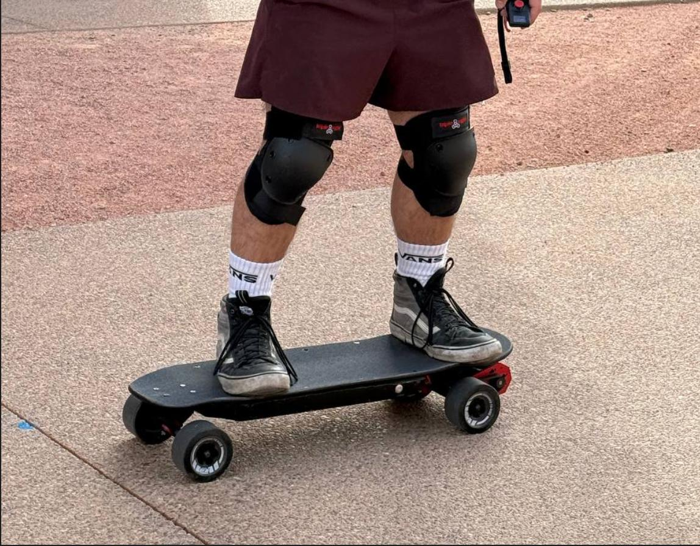
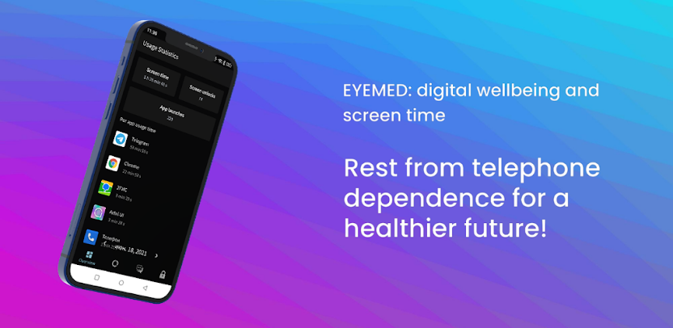
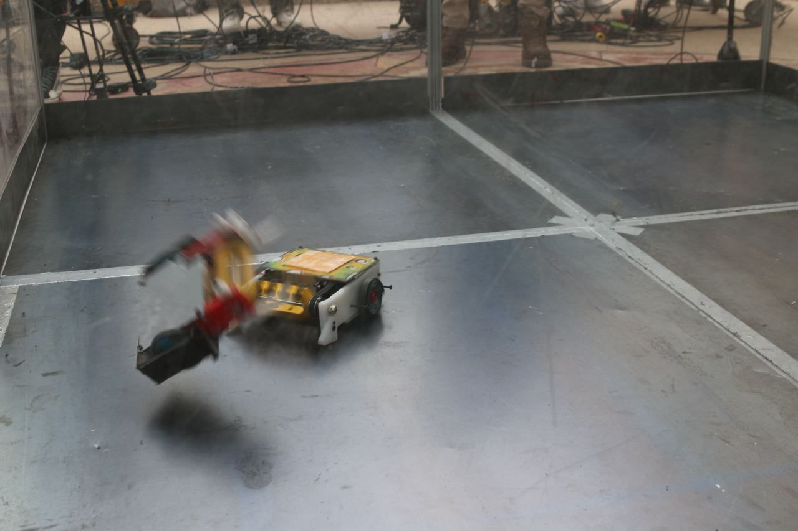
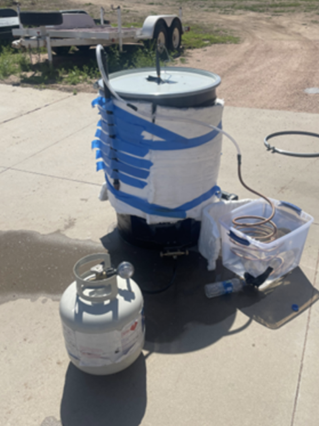
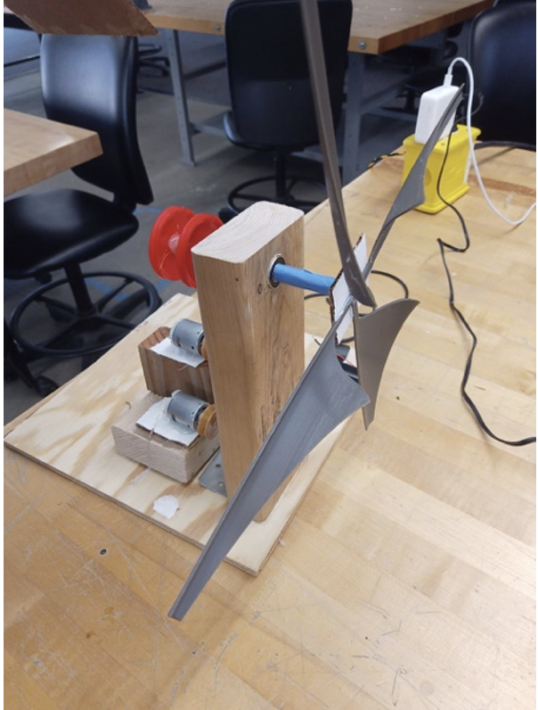
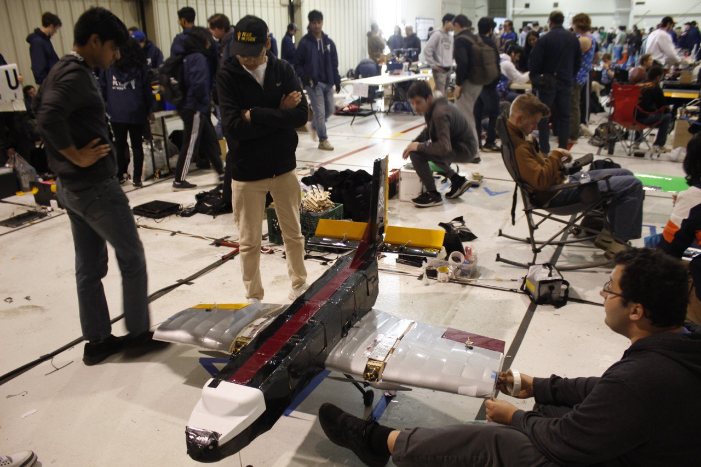
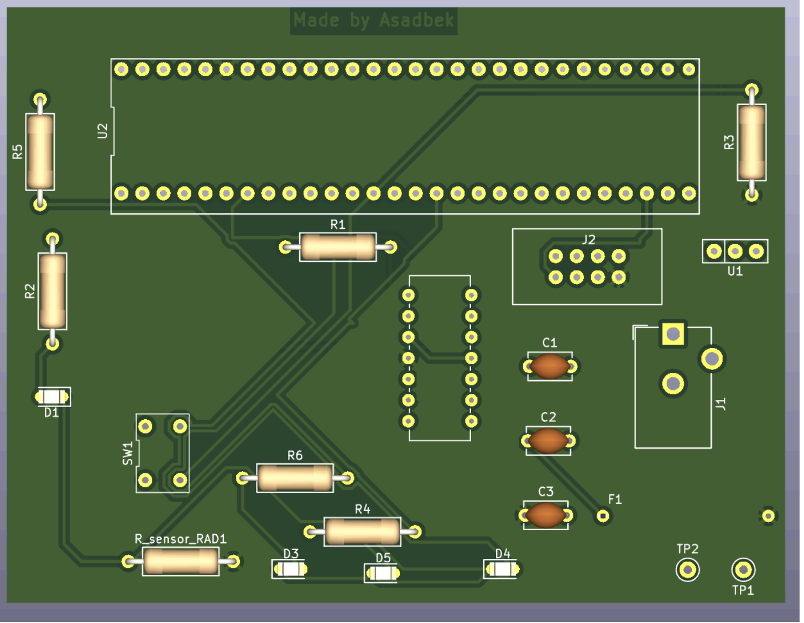
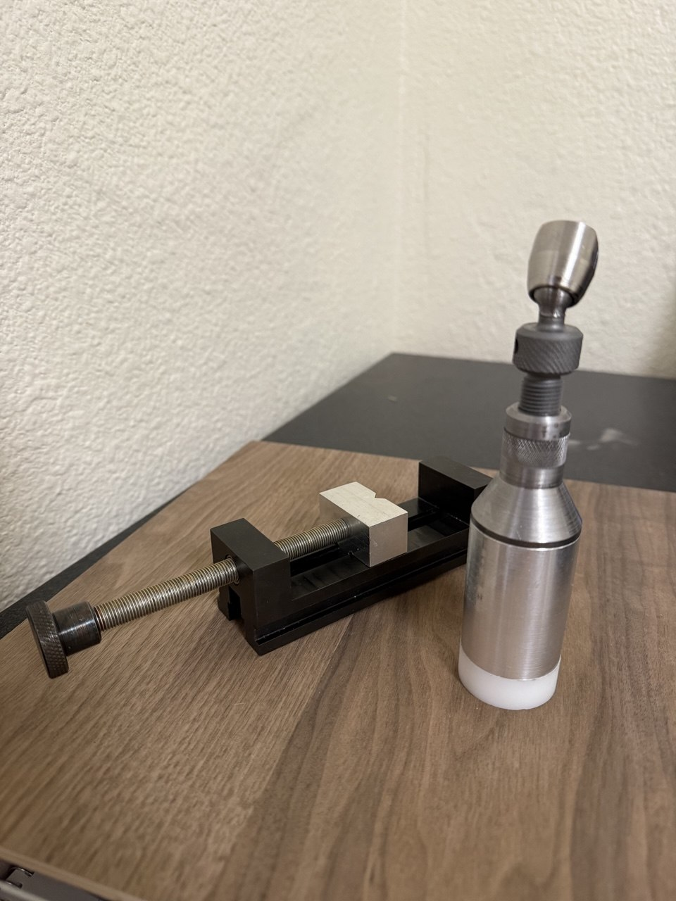

Project Experience
Projects & Builds
Robotics student focused on embedded systems, mechatronics integration, and control. Experienced with CAD modeling, circuit design, microcontrollers, and hands-on prototyping.
Bluetooth-Controlled Electric Skateboard
Designed and fabricated a high-torque electric skateboard integrating a BLDC motor, programmable ESC, and custom Bluetooth handheld remote. Implemented reliable wireless communication and control logic to deliver smooth, low-latency throttle response across varying speeds and load conditions.
Tuned throttle curves, current limits, and battery configuration through iterative testing; validated stable operation above 25 km/h, maintaining consistent power delivery and thermal reliability in real-world riding conditions.
- Tech: BLDC motor, ESC tuning, Bluetooth, control logic, system testing
- Focus: low-latency control, safety limits, thermal stability, reliability

EyeMed — Eye Care & Digital Well-Being
Built EyeMed, a digital well-being app designed to reduce eye strain and screen fatigue through scheduled breaks and guided activities. The app prompts users every 30 minutes and encourages quick exercises and optional phone-lock breaks to support healthier screen habits.
- Focus: habit-building reminders, user-friendly flows, wellness activities
- Outcome: structured break routine to reduce screen-related eye strain
Google Play — EyeMed / Pomodoro
Google Play — App Data Usage Tracker

Combat Ready Robotics @ ASU — "Cheese Touch" Battlebot
Built a 3-pound battlebot ("Cheese Touch") through Combat Ready Robotics workshops and team collaboration. Gained experience assembling, preparing, and troubleshooting the robot in a competition environment with fast iteration under time and budget constraints.
Earned a "Best Dressed" nomination and strengthened practical skills in teamwork, rapid debugging, and build decision-making.
- Skills: build iteration, competition prep, troubleshooting, teamwork

EPICS @ ASU — Nepal Pyrolyzer / Biochar Kiln Improvement
Contributed to an EPICS project supporting communities in Nepal that convert invasive Lantana camara into biochar using kilns. Developed and evaluated design modifications to increase maximum internal temperature and improve biochar quality.
Focused on concepts to recirculate heat and raise kiln performance, targeting at least 350 °C. Iterated designs based on prototype testing while keeping solutions adaptable to local constraints.
- Focus: thermal performance, test-driven iteration, real-world constraints
- Impact: higher-quality biochar for water purification and fuel applications

Renewable Energy Producer for Sparkyville (EGR 102)
Designed and built a compact power system for the Sparkyville challenge: produce as much continuous electrical energy as possible while meeting strict size, stability, and cost constraints. Evaluated wind/solar/hydro options and selected a wind-based design to maximize cost-to-power performance.
Built within a 1 ft × 1 ft base and height/clearance limits, emphasizing structural stability and reliable output during testing.
- Focus: design-to-constraints, prototyping, iterative improvement

Air Devils @ ASU — AIAA Design / Build / Fly
Member of the Air Devils team participating in the AIAA Design / Build / Fly competition. Contributed to assembling the aircraft, supporting modeling tasks, and assisting with engineering design reports.
- Contributions: aircraft assembly, modeling support, design reports
- Skills: teamwork, build quality, documentation, iteration

Embedded Systems Design (EGR 304 / EGR 314)
Delivered the VibeWater project featuring a custom PCB for actuator control and embedded firmware on a PIC18F microcontroller for reliable mechatronics integration.
Applied the engineering design process from concept to prototyping and iteration; currently working on ESP32 integration for a rover system to improve connectivity and modularity.
- Tech: PIC18F, ESP32, PCB design, embedded debugging, actuator integration

3-DOF Manipulator + Machine Vision Pick-and-Place (EGR 455 / 456)
Built a 3-DOF robotic manipulator and a machine vision system capable of locating a nut placed at arbitrary positions, picking it up, and returning it to its original location.
Implemented forward and inverse kinematics and motion control using Python and C++, and integrated sensors/actuators to improve repeatability and task accuracy.
- Tech: Python, C++, kinematics, motion control, sensors/actuators


Manual Machining — Screw Jack & Milling Vise (EGR 294)
Designed and fabricated a functional Screw Jack (Lathe Project) and Milling Vise (Mill Project) using manual machining processes.
Performed precision turning, threading, knurling, drilling, boring, surfacing, slot cutting, and tapping operations while maintaining dimensional tolerances and alignment. Applied GD&T principles, measurement techniques, and shop safety practices to ensure proper fit, smooth motion, and functional assembly.
- Tech: Manual Lathe, Manual Mill, Drilling, Thread Cutting, GD&T, Precision Measurement